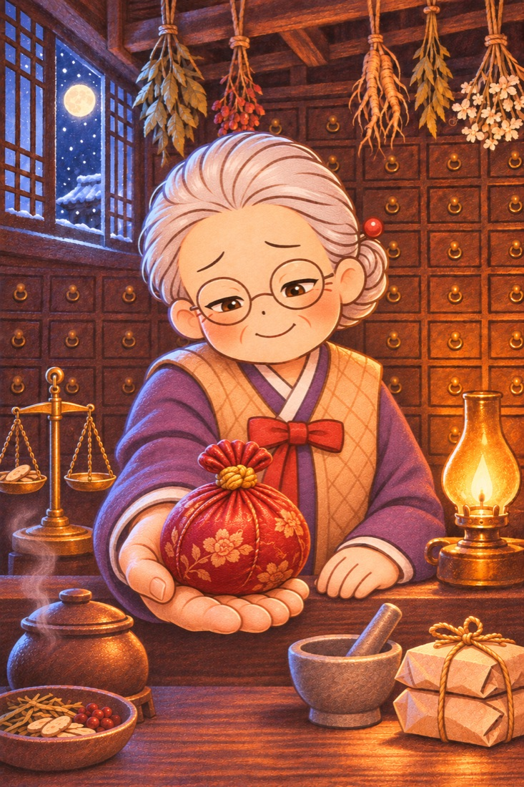
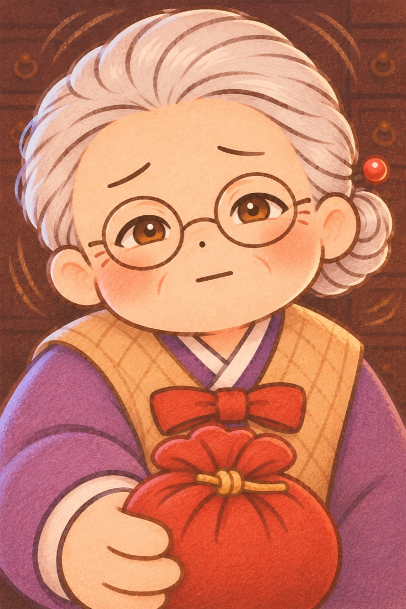
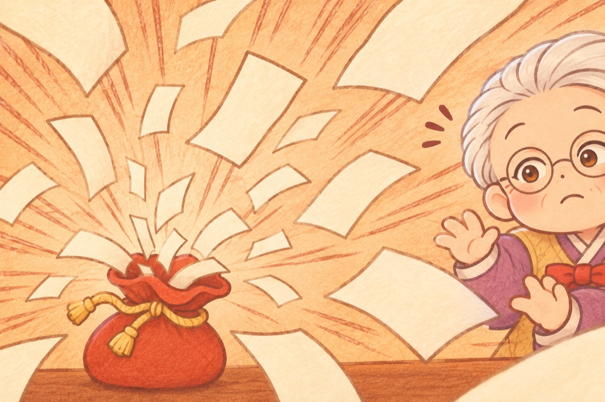

새 컷 시험 2장
예전 컷 질감(무광 크레용, 단순한 모양)에 맞추고, 구도는 웹툰처럼 클로즈업과 집중선을 넣었어요.
질감 비교 · 예전 컷 / 첫 시도 / 이번 시험

① «너는 힘든 걸 말을 안 하지»

② «삼킨 말이 한꺼번에 나온다»

첫 시도의 같은 장면:
예전 컷 질감(무광 크레용, 단순한 모양)에 맞추고, 구도는 웹툰처럼 클로즈업과 집중선을 넣었어요.



첫 시도의 같은 장면: